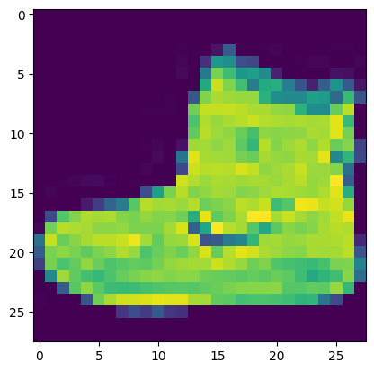
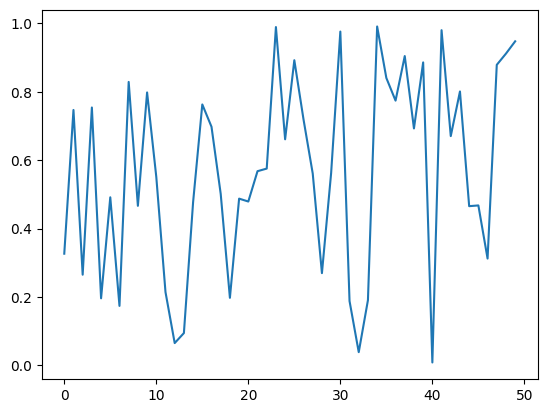
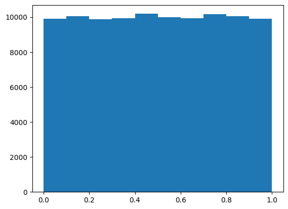
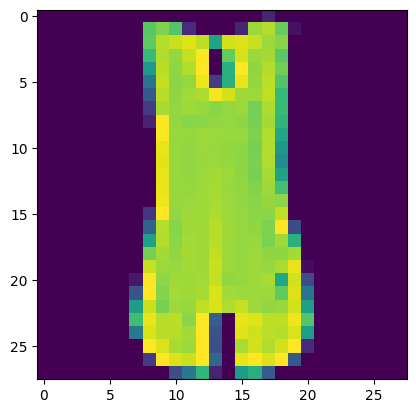

import pickle, gzip, os
from pathlib import Path
import json, torch
from itertools import islice
from torch import tensor
import random
from matplotlib import pyplot as plt
from fastcore.test import test_close
from numba import njit
import numpy as np
import mathMatrix Multiplication from foundations
Get Data
if 'google.colab' in str(get_ipython()):
path = Path('fashion_mnist/')
else:
path = Path('../../data/fashion_mnist/')os.listdir(path)['t10k-images-idx3-ubyte.gz',
'train-labels-idx1-ubyte.gz',
'train-images-idx3-ubyte.gz',
't10k-labels-idx1-ubyte.gz']# taken from https://github.com/zalandoresearch/fashion-mnist/blob/master/utils/mnist_reader.py
def load_mnist(path, kind='train'):
import os
import gzip
import numpy as np
"""Load MNIST data from `path`"""
labels_path = os.path.join(path,
'%s-labels-idx1-ubyte.gz'
images_path = os.path.join(path,
'%s-images-idx3-ubyte.gz'
with gzip.open(labels_path, 'rb') as lbpath:
labels = np.frombuffer(lbpath.read(), dtype=np.uint8,
offset=8)
with gzip.open(images_path, 'rb') as imgpath:
images = np.frombuffer(imgpath.read(), dtype=np.uint8,
offset=16).reshape(len(labels), 784)
return images, labelsclass_mapping = [
"T-shirt/top",
"Trouser",
"Pullover",
"Dress",
"Coat",
"Sandal",
"Shirt",
"Sneaker",
"Bag",
"Ankle boot"
]X_train, Y_train = load_mnist(path)
X_test, Y_test = load_mnist(path, 't10k')
X_train = X_train / 255.
X_test = X_test / 255.X_train.dtypedtype('float64')X_train.shape, Y_train.shape, X_test.shape, Y_test.shape((60000, 784), (60000,), (10000, 784), (10000,))lst1 = list(X_train[0])
vals = lst1[200: 210]
vals[0.0,
0.0,
0.0,
0.0,
0.0,
0.0,
0.0,
0.00392156862745098,
0.0,
0.27058823529411763]vals_iter = iter(vals)next(vals_iter)0.0def chunks(lst, sz):
for i in range(0, len(lst), sz):
yield lst[i: i + sz]vals_chunks = chunks(vals, 5)next(vals_chunks)[0.0, 0.0, 0.0, 0.0, 0.0]next(vals_chunks)[0.0, 0.0, 0.00392156862745098, 0.0, 0.27058823529411763]plt.imshow(list(chunks(lst1, 28)))<matplotlib.image.AxesImage>
Y_train[0], class_mapping[Y_train[0]](9, 'Ankle boot')vals_iter = iter(vals)list(islice(vals_iter, 5))[0.0, 0.0, 0.0, 0.0, 0.0]it = iter(lst1)plt.imshow(list(iter(lambda: list(islice(it, 28)), [])))<matplotlib.image.AxesImage>
Random Number
rnd_state = None
def seed(x):
global rnd_state
x, a = divmod(x, 30326)
x, b = divmod(x, 30327)
x, c = divmod(x, 30328)
rnd_state = int(a) + 1, int(b) + 1, int(c) + 1def rand():
global rnd_state
a, b, c = rnd_state
x = (172 * a) % 30327
y = (171 * b) % 30328
z = (170 * c) % 30329
rnd_state = x, y, z
return (x / 30327 + y / 30328 + z / 30329) % 1.0seed(879828)rand(), rand(), rand()(0.3015735034453595, 0.6902815800191595, 0.8979090043518492)plt.plot([rand() for _ in range(50)])
plt.hist([rand() for _ in range(100_000)])(array([ 9911., 10047., 9879., 9924., 10184., 9979., 9943., 10164.,
10059., 9910.]),
array([5.26005285e-06, 1.00004091e-01, 2.00002923e-01, 3.00001754e-01,
4.00000585e-01, 4.99999417e-01, 5.99998248e-01, 6.99997079e-01,
7.99995911e-01, 8.99994742e-01, 9.99993573e-01]),
<BarContainer object of 10 artists>)
if os.fork(): print(f'In parent {rand()}')
else:
print(f'In child {rand()}')
os._exit(os.EX_OK)In parent 0.9651230962275226if os.fork(): print(f'In parent {torch.rand(1)}')
else:
print(f'In child {torch.rand(1)}')
os._exit(os.EX_OK)In parent tensor([0.1955])
In child tensor([0.1955])if os.fork(): print(f'In parent {random.random()}')
else:
print(f'In child {random.random()}')
os._exit(os.EX_OK)In parent 0.1996222936679456
In child 0.5101572296608223Matrix and Tensor
X_train[100][121]0.6823529411764706class Matrix:
def __init__(self, xs):
self.xs = xs
def __getitem__(self, idxs):
return self.xs[idxs[0]][idxs[1]]m = Matrix(X_train)m[100, 121]0.6823529411764706imgs = tensor(X_train); imgs[100][121]tensor(0.6824, dtype=torch.float64)imgs.dtypetorch.float64imgs = imgs.reshape(-1, 28, 28)plt.imshow(imgs[4])<matplotlib.image.AxesImage>
class_mapping[Y_train[4]]'T-shirt/top'5.96 ms ± 2.05 ms per loop (mean ± std. dev. of 7 runs, 10 loops each)134 µs ± 29.1 µs per loop (mean ± std. dev. of 7 runs, 10 loops each)Matrix Multiplication
m1 = X_train[:5]; m1array([[0., 0., 0., ..., 0., 0., 0.],
[0., 0., 0., ..., 0., 0., 0.],
[0., 0., 0., ..., 0., 0., 0.],
[0., 0., 0., ..., 0., 0., 0.],
[0., 0., 0., ..., 0., 0., 0.]])m2 = torch.randn(784, 10); m2.shapetorch.Size([784, 10])ar, ac = m1.shape
br, bc = m2.shape
c = torch.zeros(ar, bc)
for i in range(ar):
for j in range(bc):
for k in range(ac):
c[i, j] += (m1[i, k] * m2[k, j])c.shapetorch.Size([5, 10])def matmul(a, b):
ar, ac = m1.shape
br, bc = m2.shape
c = torch.zeros(ar, bc)
for i in range(ar):
for j in range(bc):
for k in range(ac):
c[i, j] += (m1[i, k] * m2[k, j])
return ct = matmul(m1, m2); t.shapetorch.Size([5, 10])CPU times: user 989 ms, sys: 2.23 ms, total: 991 ms
Wall time: 997 ms5*10*78439200Matrix Multiplication using numba
@njit
def dot(a, b):
res = 0
for i in range(len(a)):
res += a[i] * b[i]
return resa = np.array([1, 2, 3])
b = np.array([4, 5, 6])CPU times: user 440 ms, sys: 153 ms, total: 593 ms
Wall time: 614 ms32CPU times: user 10 µs, sys: 2 µs, total: 12 µs
Wall time: 14.8 µs32m1[0, :].shape(784,)m2[:, 0].shapetorch.Size([784])def matmul(a, b):
ar, ac = a.shape
br, bc = b.shape
c = torch.zeros(ar, bc)
for i in range(ar):
for j in range(bc):
c[i, j] = dot(a[i,:], b[:, j])
return cCPU times: user 87.9 ms, sys: 0 ns, total: 87.9 ms
Wall time: 93.8 mstest_close(t, matmul(m1, m2.numpy()), eps=1e-4)Matrix Multiplication using element wise operation
m1 = torch.tensor(m1).float()m1[0, :].shape, m2[:, 0].shape(torch.Size([784]), torch.Size([784]))def matmul(a, b):
ar, ac = a.shape
br, bc = b.shape
c = torch.zeros(ar, bc)
for i in range(ar):
for j in range(bc):
c[i, j] = (a[i, :] * b[:, j]).sum()
return cCPU times: user 3.18 ms, sys: 31 µs, total: 3.21 ms
Wall time: 6.33 mstest_close(t, matmul(m1, m2), eps=1e-4)def matmul(a, b):
ar, ac = a.shape
br, bc = b.shape
c = torch.zeros(ar, bc)
for i in range(ar):
for j in range(bc):
c[i, j] = torch.dot(a[i, :], b[:, j])
return cCPU times: user 2.86 ms, sys: 0 ns, total: 2.86 ms
Wall time: 2.79 mstest_close(t, matmul(m1, m2), eps=1e-4)Matrix Multiplication using broadcasting
c = tensor([10, 20, 30]); ctensor([10, 20, 30])m = torch.tensor([[1, 2, 3], [4, 5, 6], [7, 8, 9]])t1 = c.expand_as(m); t1.shapetorch.Size([3, 3])t1.stride(), t1.shape((0, 1), torch.Size([3, 3]))t1.storage()UserWarning: TypedStorage is deprecated. It will be removed in the future and UntypedStorage will be the only storage class. This should only matter to you if you are using storages directly. To access UntypedStorage directly, use tensor.untyped_storage() instead of tensor.storage()
t1.storage() 10
20
30
[torch.storage.TypedStorage(dtype=torch.int64, device=cpu) of size 3]m1tensor([[0., 0., 0., ..., 0., 0., 0.],
[0., 0., 0., ..., 0., 0., 0.],
[0., 0., 0., ..., 0., 0., 0.],
[0., 0., 0., ..., 0., 0., 0.],
[0., 0., 0., ..., 0., 0., 0.]])m1[0].shapetorch.Size([784])m1[0, :].shapetorch.Size([784])m1[0, :, None].shapetorch.Size([784, 1])m2.shapetorch.Size([784, 10])(m1[0, :, None] * m2).shapetorch.Size([784, 10])(m1[0, :, None] * m2).sum(axis=0).shapetorch.Size([10])def matmul(a, b):
ar, ac = a.shape
br, bc = b.shape
c = torch.zeros(ar, bc)
for i in range(ar):
c[i] = (m1[i, :, None] * m2).sum(axis=0)
return ctest_close(t, matmul(m1, m2), eps=1e-4)CPU times: user 323 µs, sys: 0 ns, total: 323 µs
Wall time: 330 µsUsing matmul
test_close(t, m1 @ m2, eps=1e-4)CPU times: user 38 µs, sys: 7 µs, total: 45 µs
Wall time: 48.6 µstest_close(t, torch.matmul(m1, m2), eps=1e-4)CPU times: user 43 µs, sys: 0 ns, total: 43 µs
Wall time: 45.8 µsCPU times: user 28.5 ms, sys: 34.1 ms, total: 62.5 ms
Wall time: 70 msCPU times: user 1.31 ms, sys: 0 ns, total: 1.31 ms
Wall time: 2.03 msEinstein Summation
m1.shape, m2.shape(torch.Size([5, 784]), torch.Size([784, 10]))mr = torch.einsum('ik,kj->ikj', m1, m2); mr.shapetorch.Size([5, 784, 10])torch.set_printoptions(precision=2, linewidth=14, sci_mode=False)mr.sum(1)tensor([[ 5.97,
-26.21,
-19.14,
11.53,
30.43,
5.51,
-10.37,
-3.66,
6.63,
-18.34],
[ 4.37,
-24.84,
-12.90,
15.05,
26.32,
6.76,
-5.28,
-13.98,
20.55,
-20.79],
[ -3.20,
-10.03,
0.13,
11.45,
6.50,
1.72,
-2.58,
0.95,
6.77,
-6.72],
[ -0.12,
-1.54,
-3.97,
13.97,
12.62,
-1.87,
-3.98,
-3.59,
7.12,
-8.40],
[-10.83,
-16.76,
-12.78,
10.36,
24.11,
15.64,
-8.89,
1.78,
3.56,
-11.24]])mr = torch.einsum('ik,kj->ij', m1, m2); mr.shapetorch.Size([5, 10])test_close(t, mr, eps=1e-4)CPU times: user 795 µs, sys: 0 ns, total: 795 µs
Wall time: 652 µspytorch op
test_close(t, m1@m2, eps=1e-4)test_close(t, torch.matmul(m1, m2), eps=1e-4)CPU times: user 39 µs, sys: 7 µs, total: 46 µs
Wall time: 50.1 µsCUDA
def matmul(grid, a, b, c):
i, j = grid
if i < c.shape[0] and j < c.shape[1]:
temp = 0
for k in range(a.shape[1]):
temp += a[i, k] * b[k, j]
c[i, j] = tempar, ac = m1.shape
br, bc = m2.shape
r = torch.zeros(ar, bc)
matmul((0, 0), m1, m2, r)
rtensor([[5.97,
0.00,
0.00,
0.00,
0.00,
0.00,
0.00,
0.00,
0.00,
0.00],
[0.00,
0.00,
0.00,
0.00,
0.00,
0.00,
0.00,
0.00,
0.00,
0.00],
[0.00,
0.00,
0.00,
0.00,
0.00,
0.00,
0.00,
0.00,
0.00,
0.00],
[0.00,
0.00,
0.00,
0.00,
0.00,
0.00,
0.00,
0.00,
0.00,
0.00],
[0.00,
0.00,
0.00,
0.00,
0.00,
0.00,
0.00,
0.00,
0.00,
0.00]])def launch_kernel(kernel, grid_x, grid_y, *args, **kwards):
for i in range(grid_x):
for j in range(grid_y):
kernel((i, j), *args)grid_x = ar
grid_y = bc
r = torch.zeros(ar, bc)
launch_kernel(matmul, grid_x, grid_y, m1, m2, r)
rtensor([[ 5.97,
-26.21,
-19.14,
11.53,
30.43,
5.51,
-10.37,
-3.66,
6.63,
-18.34],
[ 4.37,
-24.84,
-12.90,
15.05,
26.32,
6.76,
-5.28,
-13.98,
20.55,
-20.79],
[ -3.20,
-10.03,
0.13,
11.45,
6.50,
1.72,
-2.58,
0.95,
6.77,
-6.72],
[ -0.12,
-1.54,
-3.97,
13.97,
12.62,
-1.87,
-3.98,
-3.59,
7.12,
-8.40],
[-10.83,
-16.76,
-12.78,
10.36,
24.11,
15.64,
-8.89,
1.78,
3.56,
-11.24]])test_close(t, r, eps=1e-4)from numba import cudaTPB = 16
rr, rc = r.shape
blockspergrid = (math.ceil(rr / TPB), math.ceil(rc / TPB))@cuda.jit
def matmul(a, b, c):
i, j = cuda.grid(2)
if i < c.shape[0] and j < c.shape[1]:
tmp = 0.
for k in range(a.shape[1]):
tmp += a[i, k] * b[k, j]
c[i, j] = tmpr = np.zeros((rr, rc))
m1 = m1.numpy()
m2 = m2.numpy()
m1g, m2g, rg = map(cuda.to_device, (m1, m2, r))matmul[blockspergrid, (TPB, TPB)](m1, m2, rg)/usr/local/lib/python3.10/dist-packages/numba/cuda/cudadrv/devicearray.py:886: NumbaPerformanceWarning: Host array used in CUDA kernel will incur copy overhead to/from device.
warn(NumbaPerformanceWarning(msg))r = rg.copy_to_host(); r.shape(5, 10)test_close(t, r, eps=1e-4)CPU times: user 3.34 ms, sys: 56 µs, total: 3.4 ms
Wall time: 3.11 msm1, m2 = map(torch.tensor, (m1, m2))CPU times: user 573 µs, sys: 0 ns, total: 573 µs
Wall time: 411 µs